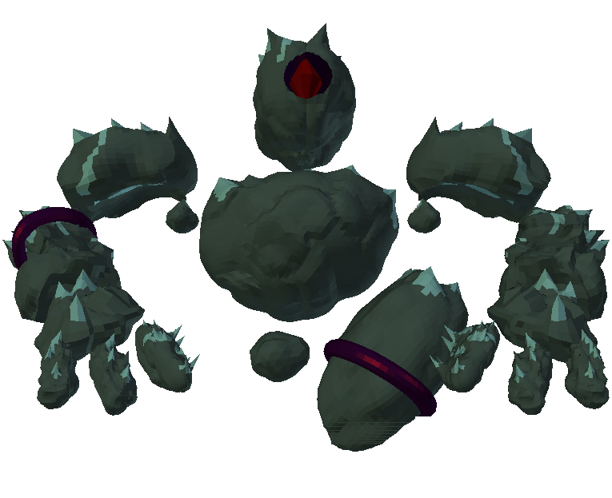

Des transformations impromptues

Depuis votre arrivée dans le monde d'Aegina, plusieurs bouleversements majeurs on eut lieu, oui c'est de votre faute. Vous êtes le premier exilé à vivre aussi longtemps dans le monde d'Aegina, depuis votre arrivée vous avez vu apparaître un nouveau type d’île mais aussi de nouveau monstre. A partir d'aujourd'hui vous allez apercevoir à votre plus grand regret des chefs de meute, ce sont les mêmes monstres qu'avant sauf qu'ils sont plus grands et plus fort qu'auparavant. Une dernière chose ne jouer pas trop avec les cristaux vous risqueriez de réveiller le gardien d'Aegina.
3/06/2016
Oh il est trop mignon !
Suite à de nombreuses plaintes répétées par certaines personnes, qui trouvaient que dans le monde magique d'Aegina il manquait cruellement de créatures mignonnes, ce dernier a décidé de lui-même de créer une nouvelle créature afin de faire taire ces plaintes incessantes. Grâce ou à cause de ces plaintes vous pourraient dorénavant trouver l'incarnation de la mignonnerie : le pingouin. Cependant afin de se venger de ces importunant le monde d'Aegina à décidé que ces nouvelles créatures seraient difformes.
30/05/2016
L'exercice rend plus fort
Cela commence à faire un certain moment que vous êtes coincé dans le merveilleux ou non monde, à vous de voir d'Aegina, cependant vous commencez petit à vous habituer à ce monde. Vous qui n'aviez jamais manié une pioche, une ache ou encore une épée est devenue très habille avec ces dernières, à tel point que vous avez développé de nouvelle technique à l'épée. Dorénavant vous arrivez à frapper alors que vous êtes en train de courir et frapper un adversaire alors que vous venez de sauter en l'air, cependant ces nouvelles attaques sont plus fatigantes qu'un simple coup.
27/05/2016
Maman je le veux

Depuis votre plus tendre enfance vous rêvez d'avoir un lapin, cependant vos parents ne vous ont jamais autorisé à en avoir. Vous pouvez à partir d'aujourd'hui en avoir un et cela sans même leur accord. Cependant pour cela vous devrez vous munir de patience et de ténacité car dans le monde d'Aegina les lapins sont les créatures les plus insaisissables.
23/05/2016
Je suis riche !
Depuis votre arrivée dans le monde d'Aegina vous avez tant bien que mal réussi à survivre, tout le monde se demande d’ailleurs comment vous avez réussi à faire. Aujourd'hui vous vous rendez compte que vous n'arrivez plus à transporter tout ce que vous récoltez au fur et à mesure que vous découvrez ce monde, heureusement par chance, vous avez découvert entre deux rochers un plan dessiné par des exilés vous précédant. Grâce à ce plan vous allez pouvoir entreposer vos objets sans les perdre et ainsi vous déplacer dans le monde d'Aegina plus librement que jamais.
20/05/2016
Envie de devenir beau ?
Depuis votre arrivée dans ce monde vous n'avez cessé de vous questionner sur votre apparence ? vous pensez que vous avez été défiguré en empruntant le portail qui mène au monde d'Aegina ? Soyez heureux alors car nous venons de réaliser un de vos plus grands rêves, vous pouvez dès à présent changer d'apparence autant de fois que vous voudrez, de plus dans notre grande bonté nous avons décidé de rendre cela gratuit pour tout le monde.
15/05/2016
Un nouvel arrivant

Aujourd'hui, comme à votre habitude, vous coupiez des cactus dans le désert, quand tout d'un coup vous vous êtes évanouis. À votre réveil tout semblait normal, cependant le cactus que vous étiez en train de couper avait disparu, comme toute personne sensée vous avez mis ça sous le coup d'une insolation. Vous avez faux, aventurier, vous venez de rencontrer votre premier Pampi, malheureusement pour vous ce ne sera pas votre dernière rencontre avec ces derniers ...
28/04/2016
Lancement de la Beta

Dans cette beta vous pourrez décourir : l'interaction avec l'environnement, un système de craft, l'ajout de monstres, un système de combat, un nouveau biome (automne), une refonte graphique du menu et des interfaces et l'ajout de succès et de statistiques. Si vous avez fait partie de nos chanceux alpha testeurs, vous allez alors recevoir un mail avec un lien pour télécharger Aegina sinon cliquez ici, la seule contrepartie que nous demandons est de remplir ce questionnaire
24/04/2016
C'est déjà halloween ?

C'est déjà halloween ? est la question que vous avez du vous poser en rentrant dans le jeu aujourd'hui, cependant rassurez-vous, ce n'est pas le cas. Vous venez de decouvrir le biome "Automne" qui vient juste de faire son apparition dans Aegina. Dans ce nouveau biome vous pourrez découvrir de nouveaux éléments comme des champignons, des citrouilles, ... nous vous laissons le plaisir de décrouvrir le reste par vous même.
20/04/2016
Ajout du wiki

Le monde d'Aegina est un monde hostile qui tentera par tous les moyens possibles de subtiliser votre vie. Afin de vous donner une chance de survivre un peu plus de temps dans ce monde que vos prédécesseurs, nous avons ajouté un wiki sur ce site. Ce wiki aura pour but de recenser toutes les ressources, élements, monstres, que vous pourrez trouver en parcourant Aegina. Nous espérons que ce wiki vous sera d'une grande aide.
16/04/2016
Apparition de monstres

Jusqu'à maintenant pour survivre dans Aegina il vous suffisait juste de vous nourrir, de vous hydrater, et surtout éviter de tomber dans les abysses. Nous avons aujourd'hui le malheur de vous annoncer que des phacochères ont était aperçus dans Aegina. Il paraîtrait que ces phacochères sont agressifs, nous vous conseillons donc de les eviter si vous tenez à la vie.
9/04/2016